1. It is great for the company which is COLORSAFETM as producers. NOT only do we have a chance to make a difference in this world, create a significant added value to what is a mediocre product, we are also able to provide a better quality product.
- By coloring our products in a raw state we are taking away the margins of the polluters down the production chain and putting it into COLORSAFETM.
- No more worrying about costs to treat waste water that we discharge if we do not do it the COLORSAFETM way. Costs is one small aspects but the nightmares and guilt; the Relieve … is the biggest incentive in doing COLORSAFETM.
- The color quality of the product is enhanced in the sense that COLORSAFETM colors are not forced in but born into the product itself. When a product is happy it performs happily and that is great for COLORSAFETM as the producers.
2. It is great for the manufacturers using COLORSAFETM. This is because they do not have to worry anymore about color matching and color properties/specifications.
- Manufacturers creating finished products using COLORSAFETM no longer have to worry about color testing as it performs mightily compared to conventional textiles.
- Also color matching becomes a thing of the past, if the color is not right the whole batch goes back to COLORSAFETM where it’s recycled. Hence, COLORSAFETM colors should always be within color tolerances already agreed.
- COLORSAFETM products are normally prebuilds but of course done according to plans that will have been agreed upon with brands and markets. This means that lead times will be much faster contributing to shorter turn around in production and faster turn overs in capital.
3. It is AWESOME for the brand that is carrying COLORSAFETM in their product. Brands can be able to fulfil more responsibilities, get a shorter lead-time product, get a higher quality product & less bound by the laws of nature in terms of color thereby exercise color creativity limitlessly.
- Always the thought that in being green brands need to cough out more greens. This is not so for COLORSAFETM because our prices, in majority are only a small fraction more than conventional products of lesser quality.
- Brands gets a shorter lead time when using COLORSAFETM, meaning lesser inventories if branded products can be sent out faster.
- The color properties of COLORSAFETM being higher than convention means that branded products can be bolder without carrying the risks associated with such boldness. Creativity can fly out the roof, when it comes to color.
As a result Brands can now create and sell MORE sustainable green finished products, which are of much better quality in colors as well as in the speed with less lower risks of non-performance. By using more quantities of COLORSAFETM brands can contribute as well to promoting healthy methods of textile production all over the world.
4. It is AWESOME for the environment because no more water means no more waterways to pollute. This is obvious:
- No more need to use water for production so that it can be made more readily available for human consumption and use to produce food for our growing global population. There are water scarcity in many places on Earth. Where there is too much water such as in floods, the water is not fit for human consumption.
- No more waste water means our waterways will be healthier for the people using it as a source of life and the living things within that nourishes our lives.
If ALL factories can be like COLORSAFE there will be less suffering on Earth. We can start to ease such suffering by using and promoting COLORSAFE.
5. It is WONDERFUL for the World. Environmentally cleaner means that we will be living in a wonderful world.
- With water use more purposed for human consumption there will should be more Eden to our World.
- With the water better suited to grow lush vegetation, support healthy food stocks, etc. We can turn our focus on other pollution such as air pollution, soil pollution, other kinds of matters and other challenges that we as a humanity will face.
Minimally whatever that we may be facing, we will be able to face them with better nourishments from cleaner water supplies. Water is our basic necessity, let us treasure its life giving nourishing nature. Make use of COLORSAFE and hopefully we can make our World even more wonderful!!!

 
